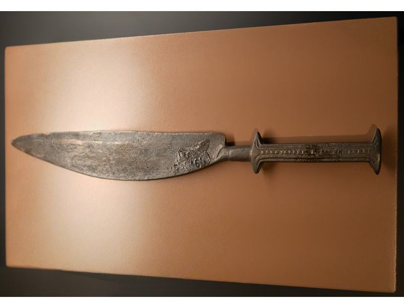
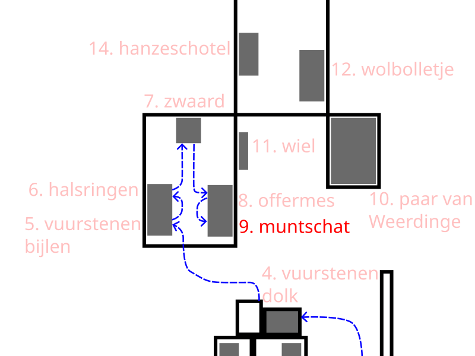

8 Bronze sacrificial knife from Daarlerveen/Vroomshoop (c. 1200–800 BCE)


This bronze knife dates from the late Bronze Age, roughly from 1200 to 800 B.C. It is therefore more than three thousand years old. At that time, people were already making objects out of bronze, an alloy of copper and tin.
This knife is unique because of its shape and the location where it was found. It was discovered in a wet environment near Vroomshoop in Overijssel. It is likely not an everyday utensil, but a ritual object. Such bronze knives are often referred to as “sacrificial knives.” Archaeologists believe they were deliberately left in peat, water, or swamps as a gift to the gods.
Its shape also suggests this. The blade is narrow and elegant, and the handle has a distinctive shape. This makes it clear that this knife was not intended solely for cutting.
Finds like these show that people in the Bronze Age did not just work and live off agriculture. They also performed rituals, leaving valuable objects in the water for their gods. For them, the bog may have been a special place where they could make offerings to the gods.
The next listening point is the Hezingen Mint Treasure.